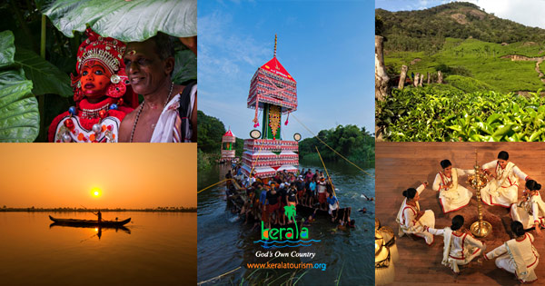
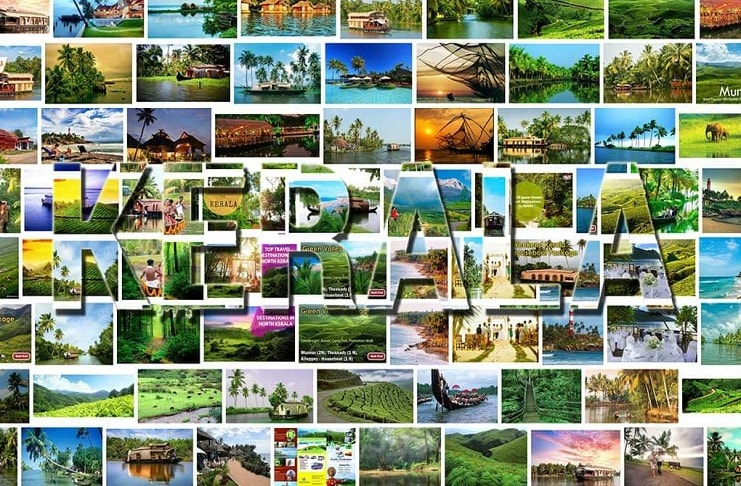

Kerala, a state situated on the tropical Malabar Coast of southwestern India, is one of the most popular tourist destinations in the country. Named as one of the ten paradises of the world by National Geographic Traveler, Kerala is famous especially for its ecotourism initiatives and beautiful backwaters. Its unique culture and traditions, coupled with its varied demography, have made Kerala one of the most popular tourist destinations in the world. Growing at a rate of 13.31%, the tourism industry is a major contributor to the state's economy. Until the early 1980s, Kerala was a relatively unknown destination, with most tourism circuits concentrated around the north of the country. Aggressive marketing campaigns launched by the Kerala Tourism Development Corporation—the government agency that oversees tourism prospects of the state—laid the foundation for the growth of the tourism industry. In the decades that followed, Kerala Tourism was able to transform itself into one of the niche holiday destinations in India. The tag line Kerala – God's Own Country was adopted in its tourism promotions and became a global superbrand. Kerala is regarded as one of the destinations with the highest brand recall. In 2010, Kerala attracted 660,000 foreign tourist arrivals. Kerala is a popular destination for both domestic as well as foreign tourists.Kerala is well known for its beaches, backwaters in Alappuzha and Kollam, mountain ranges and wildlife sanctuaries. Other popular attractions in the state include the beaches at Kovalam, Muzhappilangad, Bekal and Kappad; backwater tourism and lake resorts around Ashtamudi Lake, Kollam; hill stations and resorts at Munnar, Wayanad, Nelliampathi, Vagamon and Ponmudi; and national parks and wildlife sanctuaries at Wayanad, Periyar, Parambikulam, Silent Valley National Park and Eravikulam National Park. The "backwaters" region—an extensive network of interlocking rivers, lakes, and canals that centre on Vembanad Lake, also see heavy tourist traffic. Heritage sites, such as the Padmanabhapuram Palace, Hill Palace, and Mattancherry Palace, are also visited. To further promote tourism in Kerala, the Grand Kerala Shopping Festival was started by the Government of Kerala in 2007. Since then it has been held every year during the December–January period. The state's tourism agenda promotes ecologically sustained tourism, which focuses on the local culture, wilderness adventures, volunteering and personal growth of the local population. Efforts are taken to minimize the adverse effects of traditional tourism on the natural environment and enhance the cultural integrity of local people. The state has also made deep inroads into MICE Tourism mainly centered at Kochi. MORE ABOUT
Since its incorporation as a state, Kerala's economy largely operated under welfare-based democratic socialist principles. This mode of development, though it resulted in a high Human Development Index and standard of living among the people, led to an economic stagnation in the 1980s (growth rate of 2.3% annually). This apparent paradox—high human development and low economic development—led to a large number of educated unemployed seeking jobs overseas, especially in the Gulf countries. Due to a large number of expatriates, many travel operators and agencies set up shop in the state to facilitate their travel needs. However, the trends soon reciprocated, with the travel agencies noticing the undermined potential of the state as a tourist destination. The first travel agency in Kerala, Kerala Travels, was founded by Col G.V. Raja of the Travancore royal family along with P.G.C. Pillai. By 1986, tourism had gained an industry status. Kerala Tourism subsequently adopted the tagline God's Own Country in its advertisement campaigns. Aggressive promotion in print and electronic media was able to invite a sizable investment in the hospitality industry. By the early 2000s, tourism had grown into a full-fledged, multi-billion-dollar industry in the state. The state was able to carve a niche for itself in the world tourism industry, thus becoming one of the places with the "highest brand recall". In 2003, Kerala, a hitherto unknown tourism destination, became the fastest-growing tourism destination in the world. Today, growing at a rate of 13.31%, Kerala is one of the most visited tourism destinations in India.
GO MORE ABOUTMedical tourism, promoted by traditional systems of medicine like Ayurveda and Siddha, is widely popular in the state, and draws increasing numbers of tourists. A combination of many factors has led to the increase in popularity of medical tourism: high costs of healthcare in industrialised nations, ease and affordability of international travel, improving technology and standards of care. However, the rampant recent growth in this sector has made the government apprehensive. The government is now considering the introduction of a grading system that would grade hospitals and clinics, thus helping tourists in selecting one for their treatments
GO MORE ABOUTKerala's culture is mainly Hindu in origin, deriving from a greater Tamil-heritage region known as Tamilakam. Later, Kerala's culture was elaborated on through centuries of contact with overseas cultures. Native performing arts include koodiyattom, kathakali—from katha ("story") and kali ("play")—and its offshoot Kerala Natanam, koothu (akin to stand-up comedy), mohiniaattam ("dance of the enchantress"), thullal, padayani, thirayattam, and theyyam. Other arts are more religion- and tribal-themed. These include chavittu nadakom, oppana (originally from Malabar), which combines dance, rhythmic hand clapping, and ishal vocalisations. However, many of these art forms largely play to tourists or at youth festivals, and are not as popular among most ordinary Keralites, who look to more contemporary art and performance styles, including those employing mimicry and parody. Additionally, a substantial Malayalam film industry effectively competes against both Bollywood and Hollywood. Several ancient ritualised arts are Keralite in origin; these include kalaripayattu (kalari ("place", "threshing floor", or "battlefield") and payattu ("exercise" or "practice")). Among the world's oldest martial arts, oral tradition attributes kalaripayattu's emergence to Parasurama. Other ritual arts includeThirayattam, theyyam, poorakkali and Kuthiyottam. Thirayattam is a ritual performing folk art form of South Malabar region in Kerala.This vibrant art form blend of dance, music, theatre, satire, facial and body-painting, masking, martial art and ritualistic function. Thirayattam is enacted in courtyards of "Kaavukal" (sacred groves) and village shrines.
G MORE ABOUTThe backwaters in Kerala are a chain of brackish lagoons and lakes lying parallel to the Arabian Sea coast (known as the Malabar Coast). Houseboat or Kettuvallam rides in the backwaters are a major tourist attraction. Backwater tourism is centered mostly around[18] of Kerala like Alleppey, Kumarakom, Ashtamudi Lake, Kollam, Ponnani, Kavvayi Backwaters, and Bekal. Boat races held during festival seasons are also a major tourist attraction in the backwater regions. The backwater network includes large lakes such as the Ashtamudi Lake, the largest among them, linked by 1500 km of canals, both man-made and natural and fed by several rivers, and extending virtually the entire length of Kerala state. The backwaters were formed by the action of waves and shore currents creating low barrier islands across the mouths of the many rivers flowing down from the Western Ghats range. Backwaters in Kerala for honeymoon and family holidays are quite popular. You may sort some of the best Kerala backwaters tour packages after reading about Kerala backwaters' reviews available on various websites
Go somewhereEastern Kerala consists of land encroached upon by the Western Ghats; the region thus includes high mountains, gorges, and deep-cut valleys. The wildest lands are covered with dense forests, while other regions lie under tea and coffee plantations (established mainly in the 19th and 20th centuries) or other forms of cultivation. The Western Ghats rise on average to 1500 m elevation above sea level. Some of the popular hill stations in the region are Munnar, Vagamon, Paithalmala, Wayanad, Nelliyampathi, Nilambur, Elapeedika, Peermade, Thekkady and Ponmudi. Kurumbalakotta Hill in Wayand is becoming a great tourist attraction now.
Go somewhere